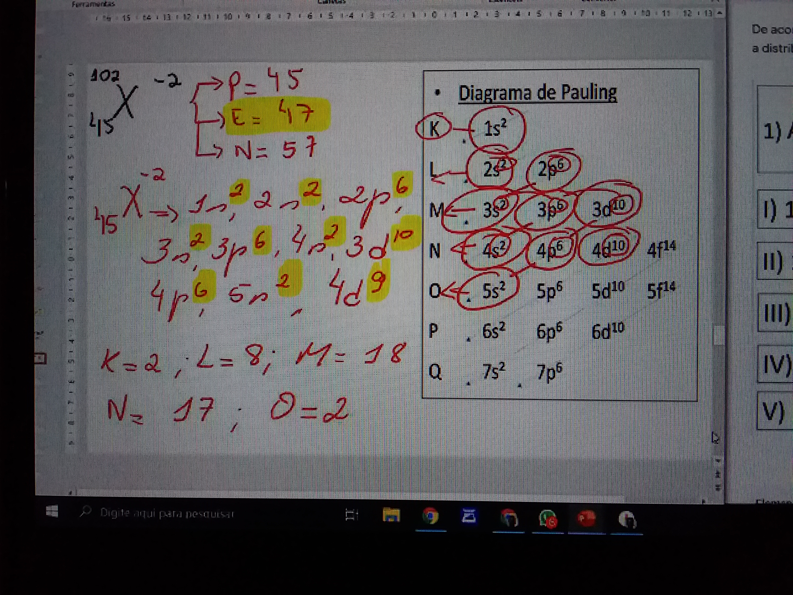

Ensino Fundamental
Desde o ensino infantil eu me destacava como exemplo da turma, sempre fui exforçado e dedicado. Por causa disso, os meus professores sempre me elogiavam e me intitulavam como o inteligente da turma (por mais que eu achase isso um axajero. Bom, como disia um dos meus professores: Num ambiente em que ninguém liga pra nada, qualquer minímo exforço você já se destaca
). De toda forma, sepre fui o destaque nas turmas que passava.
Curcei o ensino fundamental 1 na escola "Jusé Rocha Cirne" e o 2 na escola "Miguel Filguera Filho". Meu desempenho em ambas foi exelente.
Consulte o histórico abaixo:

Ensino Médio
Curcei o ensino médio na escola "Pedro Augusto de Almeida". Nesse período também fui aluno destaque destaque em todas as turmas. Nessa escola, todos os simulados divigavam os resultados com uma lista em ordem crescente de nota e em todas as vezes eu sempre era o primeiro da lista.
Devido eu ter estudado em escolas pública, não tive muitas oportunidades de desenbvolver habilidades extracurriculares, mas mesmo assim, sempre busquei novos conhecimentos. Por final do curso, quando os alunos são mais questionados sobre que carreira vão seguir,foi quando eu decidi que a programação era o que eu queria me especializar, e quando comecei me aprofundar no assunto tive um forte arrependimento de não ter começado muito antes. Enfim o resumo do meu ensino médio foi de exelencia.
Segue o histórico:
Ensino Superior
Atualmente estou cursando o curso de Ciêcia da Computação na UEPB. Estou gostando muito desse novo conhecimento, embora, adimito, estar sendo bem desafiador. Estou também, focando no desenvolvimento de hardskils (habilidades), como o aprendizado do english com foco em ficar fluente, e vários outros cursos por fora, como: Desenvolvimento web, JavaScript, phyton, empreendorismo, oratória, etc. Por fim, estou criando meu atraente curriculo, e estou focado no meu sucesso profissional.
Voltar